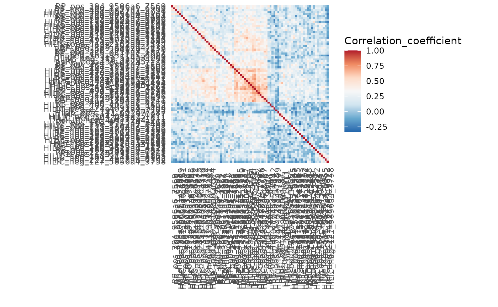
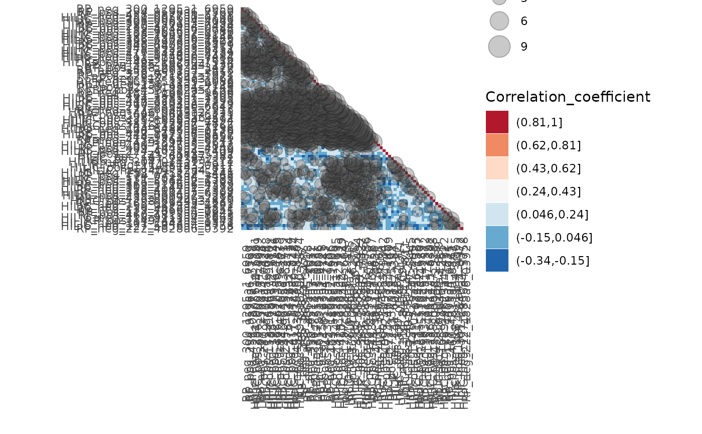

Heatmap of effects between variables, such as correlations
Source:R/effect_heatmap.R
plot_effect_heatmap.RdDraws a heatmap of e.g. correlations between variables (see perform_correlation_tests). It is possible to draw only the lower triangular of the heatmap, order rows and columns with hierarchical clustering, and add circles for p-values.
Usage
plot_effect_heatmap(
data,
x,
y,
effect,
p = NULL,
p_limit = 0.1,
point_size_range = c(1, 6),
log2_effect = FALSE,
discretize_effect = FALSE,
breaks = 5,
clustering = TRUE,
dist_method = "euclidean",
clust_method = "ward.D2",
lower_tri = FALSE,
reverse_y = TRUE,
use_coord_fixed = TRUE,
symmetric_aspect_ratio = TRUE,
title = NULL,
subtitle = NULL,
fill_scale = NA
)Arguments
- data
a data frame with x and y variables and the effect
- x, y
the column names of data with the x and y variables
- effect
the column name of the effect, e.g. correlation
- p
optional, the column name with p-values. If provided, points that scale by p-value are drawn on top of the heatmap tiles
- p_limit
numeric, only p-values below the limit are plotted as points
- point_size_range
a numeric vector of length 2. The upper and lower limits for the point sizes. This needs to be adjusted to make the point size look good when compared to the tiles
- log2_effect
logical, whether the effect should be plotted on a logarithmic scale (in case of fold change etc.)
- discretize_effect
logical, whether the effect range should be divided into discrete levels instead of using a continuous scale. Can sometimes make patterns more visible, but the hard limits can blur the big picture as well.
- breaks
if
discretize_effect = TRUE, either the number of breaks or the points where to cut for the levels, seecut- clustering
logical, whether the order of rows and columns should be ordered by hierarchical clustering?
- dist_method
distance method used in clustering, see
dist- clust_method
clustering method used in clustering, see
hclust- lower_tri
logical, should only the lower triangular be plotted?
- reverse_y
logical, if
clustering = FALSE, lower_tri = FALSE, should the order of the y-axis be reversed so that the diagonal is from top left to bottom right?- use_coord_fixed
logical, should the heatmap tiles be squares? If yes, this uses
coord_fixed- symmetric_aspect_ratio
logical, should the plot panel be a square? If yes, uses ggplot2::theme(aspect.ratio = 1).
- title, subtitle
the title and subtitle of the plot
- fill_scale
fill scale for the heatmap as returned by a ggplot function. Set to NA to choose the appropriate scale based on the class of the effect variable.
Details
All missing effects between variables are replaced by 0 before
clustering, since hclust can't deal with missing values.
Examples
data(example_set)
# Compute correlations between variables
correlations <- perform_correlation_tests(example_set,
x = rownames(example_set),
duplicates = TRUE
)
#> INFO [2025-06-23 22:37:41] Starting correlation tests.
#> INFO [2025-06-23 22:37:41] Performing correlation tests for single object
#> INFO [2025-06-23 22:37:43] Correlation tests performed.
# Minimal example
plot_effect_heatmap(correlations,
x = "X", y = "Y", effect = "Correlation_coefficient")

# Lower triangular with discrete effect and p-value dots
plot_effect_heatmap(correlations,
x = "X", y = "Y", effect = "Correlation_coefficient",
p = "Correlation_P", point_size_range = c(2, 8),
discretize_effect = TRUE, breaks = 7, lower_tri = TRUE
)
